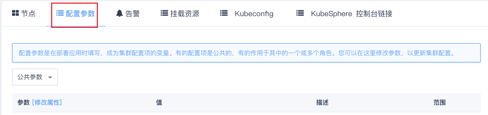
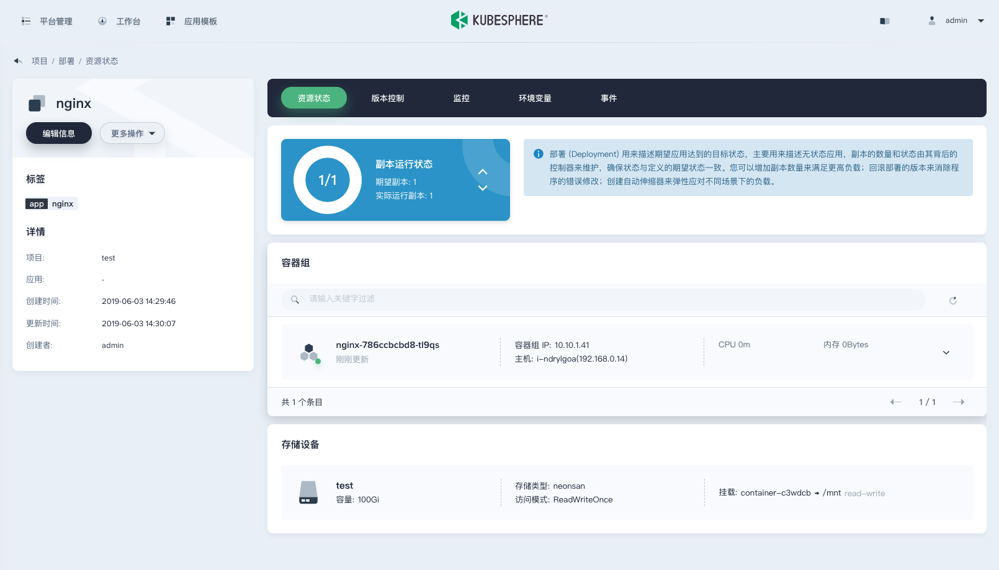

使用手册
登录节点
通过 VNC 登录
可以直接在管理控制台通过客户端节点的 VNC 窗口免密登录其他节点，客户端节点的用户名密码是 root / <cluster id>，初次登录会提示修改密码。建议选用至少 8 位字符的复杂密码增强安全性。
注意
老版本升级之后再关闭重启集群，客户端节点密码会更新为新版本的初始密码。
通过 SSH 登录
也可以先在集群参数配置 SSH Key，然后直接免密登录所有节点。注意 SSH 密钥格式，要以算法（比如 ssh-rsa）开头，参照下面表格中的说明。
注意
所有节点的 SSH 服务已禁止以密码形式登录，请按照本文档使用 SSH 密钥的形式来增强安全性。

| 参数 | 说明 |
|---|---|
| 用户 SSH 公钥 | 以算法、密钥、注释（可省略）这三部分表示，三部分之间用空格隔开，如：ssh-rsa AAAA… user@i-xxx |
命令行访问 K8s
通过公网 EIP 访问 Kubernetes 资源，需要以下几个步骤：
- 更新 QKE 参数：在 QKE 配置 Kubernetes EIP 地址
- 防火墙放行：确保 EIP 与 Kubernetes Apiserver 相连通
- 下载 kubeconfig：复制 kubeconfig 内容到本地
说明
此示例中，VPC 绑定的 EIP 为 139.198.14.13。
更新 QKE 参数
QKE 的 Kubernetes EIP 地址可以在 QKE 创建时指定，也可以在 QKE 运行时更新。运行时修改 QKE 的 Kubernetes EIP 地址会造成 Kubernetes Apiserver 重启，不建议频繁更新。配置后，此 EIP 地址会自动更新到 Apiserver 的 TLS 证书中。
防火墙放行
EIP 可以有两种方式与 K8s Apiserver 相连接：VPC 端口转发和通过负载均衡器。请确保 EIP 与 Kubernetes Apiserver 6443 端口相连通。
通过 VPC 端口转发
对于 QKE 所在 VPC 绑定了 EIP 可以采用此方法。
找到访问 Kubernetes Apiserver 的私有网络 IP 地址。对于一个主节点的 QKE，到 QKE 详情页查询 QKE 主节点私有网络 IP 地址。
对于高可用的 QKE，访问 Kubernetes Apiserver 的私有网络 IP 地址应为 QKE 创建时创建的私有网络负载均衡器的 IP，负载均衡器名为 QKE 集群 ID。
VPC 配置转发规则，源端口可以根据用户实际情况配置，内网 IP 为访问 Kubernetes Apiserver 的私有网络 IP 地址，内网端口为 6443。
说明
此示例中 VPC 端口转发源端口为 16443。
打开 VPC 网络绑定的防火墙下行端口。
将转发端口 16443 保存至 Kubernetes 外网端口 中。
说明
该参数为
v3.0.0 - KubeSphere v3.0.0版本新增参数，用来主动修改 kubeconfig。如果使用的是老版本 QKE，则只能使用默认的6443端口，不可修改。
通过负载均衡器
对于通过负载均衡器访问到 QKE Kubernetes Apiserver 的集群可以采用此方法。
将外部绑定类型 EIP 绑定至负载均衡器。
下载 kubeconfig
说明
请确保用户本地云服务器可访问 EIP。
在 Kubeconfig 标签页将 QKE 的 Kubernetes Kubeconfig 拷贝到用户本地云服务器，即可使用。
注意
v2.0.0 - KubeSphere v2.1.1及更老的版本需要修改 kubeconfig 文件中的 server 字段。
v3.0.0 - KubeSphere v3.0.0该版本会主动修改该字段，其优先级为：kubernetes 外网访问地址 > 负载均衡器 vip > 第一个主节点 ip。
通过 VPC 端口转发
通过 VPC 端口转发，server 的值应设置为 https://VPC绑定EIP: VPC端口转发源端口。示例为 https://139.198.14.13:16443。
$ cat admin.conf
apiVersion: v1
clusters:
- cluster:
certificate-authority-data: ...
server: https://139.198.14.13:16443
name: kubernetes
contexts:
- context:
cluster: kubernetes
user: kubernetes-admin
name: kubernetes-admin@kubernetes
current-context: kubernetes-admin@kubernetes
kind: Config
preferences: {}
users:
- name: kubernetes-admin
user:
client-certificate-data: ...
$ kubectl get no --kubeconfig admin.conf
NAME STATUS ROLES AGE VERSION
master1 Ready master 12m v1.17.9
master2 Ready master 12m v1.17.9
master3 Ready master 12m v1.17.9
worker-p001 Ready worker 10m v1.17.9
worker-p002 Ready worker 10m v1.17.9
worker-p003 Ready worker 10m v1.17.9
通过负载均衡器
通过负载均衡器, server 的值应设置为 https://负载均衡器绑定EIP: 6443。示例为 https://139.198.19.60:6443。
$ cat admin.conf
apiVersion: v1
clusters:
- cluster:
certificate-authority-data: ...
server: https://139.198.19.60:6443
name: kubernetes
contexts:
- context:
cluster: kubernetes
user: kubernetes-admin
name: kubernetes-admin@kubernetes
current-context: kubernetes-admin@kubernetes
kind: Config
preferences: {}
users:
- name: kubernetes-admin
user:
client-certificate-data: ...
$ kubectl get no --kubeconfig admin.conf
NAME STATUS ROLES AGE VERSION
master1 Ready master 15m v1.17.9
master2 Ready master 15m v1.17.9
master3 Ready master 15m v1.17.9
worker-p001 Ready worker 13m v1.17.9
worker-p002 Ready worker 13m v1.17.9
worker-p003 Ready worker 13m v1.17.9
浏览器访问 KubeSphere
如果安装了 KubeSphere，请先确认 KubeSphere 的后端都已正常运行。
# kubectl get po -n kubesphere-system
NAME READY STATUS RESTARTS AGE
ks-apiserver-6c57768789-5rzqt 1/1 Running 0 12m
ks-apiserver-6c57768789-dmdzv 1/1 Running 0 12m
ks-apiserver-6c57768789-l294q 1/1 Running 0 12m
ks-console-9bc9c5df8-8gwfn 1/1 Running 0 14m
ks-console-9bc9c5df8-m2g6t 1/1 Running 0 14m
ks-console-9bc9c5df8-tg2d9 1/1 Running 0 14m
ks-controller-manager-6c7d5d5684-6mtn5 1/1 Running 0 12m
ks-controller-manager-6c7d5d5684-6zxf9 1/1 Running 0 12m
ks-controller-manager-6c7d5d5684-p4wsl 1/1 Running 0 12m
ks-installer-774447cd48-9glh6 1/1 Running 0 17m
openldap-0 1/1 Running 0 15m
openldap-1 1/1 Running 0 13m
redis-ha-haproxy-ffb8d889d-4r9mm 1/1 Running 0 15m
redis-ha-haproxy-ffb8d889d-jvmfl 1/1 Running 0 15m
redis-ha-haproxy-ffb8d889d-v4chq 1/1 Running 0 15m
redis-ha-server-0 2/2 Running 0 15m
redis-ha-server-1 2/2 Running 0 14m
redis-ha-server-2 2/2 Running 0 13m
说明
首次登录 KubeSphere 请使用如下默认管理员账户信息，登录后务必及时修改密码。
用户名：
admin@kubesphere.io密码：
P@88w0rd
通过 VPC 端口转发
KubeSphere Dashboard 以 NodePort 的形式暴露在端口 30880，您可以在 VPC 上设置端口转发到任一集群节点 (非Client节点) 的此端口来访问 KubeSphere Dashboard。还需要配置的如下图所示。
说明
此示例中，端口是30880，在实际使用中，您需要根据
kubectl get svc -n kubesphere-system ks-console命令返回结果来查看具体端口号。
说明
用户通过公网 IP 访问 KubeSphere Dashboard 需要配置 VPC 所绑定的防火墙的下行规则，放行通过公网 IP 对 30880 端口的访问。
配置规则保存后，您就可以使用 VPC 的公网 IP 地址来访问 KubeSphere 了，如下图
通过负载均衡器
可在控制台 QKE 集群详情页的 “KubeSphere 控制台链接” 标签页找到 KubeSphere 控制台访问链接。
可直接单击链接访问 KubeSphere 控制台。
挂载云平台块存储
从 QKE v1.0.1 版本起内置了 CSI，可以动态创建基于 IaaS 上的硬盘的 PVC，并挂载到 Pod，当 Pod 迁移时，硬盘会自动随着 Pod 迁移到其他云服务器上。KubeSphere 的存储卷使用方法见KubeSphere 文档。
使用 NeonSAN 硬盘
QKE 在支持 NeonSAN 硬盘的区创建了 neonsan 存储类型，用户可以在 KubeSphere 控制台创建 NeonSAN 存储卷。
创建存储卷
创建存储卷时 “存储卷设置” 处的存储类型选择 “neonsan” 存储类型：

创建工作负载
创建工作负载挂载 NeonSAN 存储卷：

对接 NFS 服务端
QKE 预安装了 NFS 客户端程序，用户对接 NFS 服务端时应确保 QKE 各节点有权限挂载 NFS 服务端文件夹。用户可以使用 Kubernetes 官方方法对接 NFS 服务端，这是一种静态分配存储卷方法，分配和回收存储卷过程复杂，可对接多个 NFS 服务端。为了方便用户对接 NFS 服务端，QKE 预置了 NFS 动态分配器，支持动态分配存储卷，分配和回收存储卷过程简便，可对接一个 NFS 服务端。
说明
示例 NFS 服务端 IP 为 192.168.0.4，NFS 共享文件夹为 /data。
安装 NFS 分配器
在 QKE client 节点，执行 Helm 安装命令
$ helm install --name ks stable/nfs-client-provisioner --set nfs.server=192.168.0.4 --set nfs.path=/data --set image.repository=kubesphere/nfs-client-provisioner --namespace=kube-system
NAME: ks
LAST DEPLOYED: Tue May 14 20:20:44 2020
NAMESPACE: kube-system
STATUS: DEPLOYED
QKE v1.0.1 及更早版本请执行下面的命令：
$ helm install --name ks /opt/kubernetes/k8s/addons/nfs-client-provisioner/ --set nfs.server=192.168.0.4 --set nfs.path=/data --namespace kube-system
验证安装结果
查看 NFS 动态分配器容器组在正常运行状态。
$ kubectl get po -n kube-system | grep nfs-client
ks-nfs-client-provisioner-cc7f5db98-c4b2m 1/1 Running 0 6s
查看 NFS 存储类型
$ kubectl get sc nfs-client
NAME PROVISIONER AGE
nfs-client cluster.local/ks-nfs-client-provisioner 26m
使用
现在可以通过动态创建 NFS 存储卷和工作负载挂载 NFS 存储卷了。